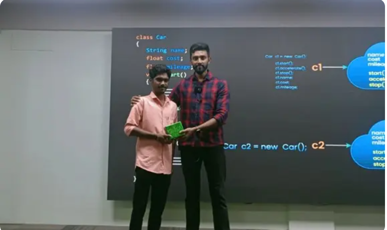
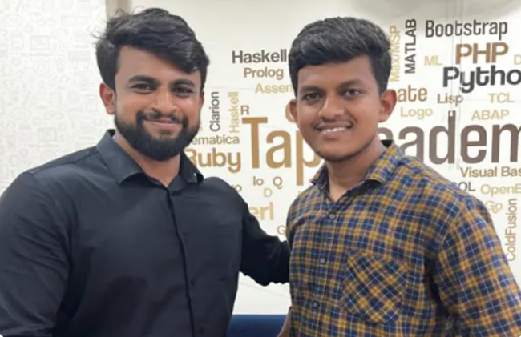

A warm thanks to the Tap Academy team.
I am Gowtham GM from Tamilnadu, a 2024 passed-out
student. I joined Tap Academy as a CSR student in the month
of February. My journey with Tap Academy is quite different.
The trainers at Tap Academy are skilled and experienced.
They teach a lot of new concepts and help in learning
programming languages from scratch.
I am from the Computer Science branch, but the teaching at
Tap Academy is structured in a way that makes it easy for
students from all domains to understand the concepts and
technology taught by the trainers.
Finally, I got placed as a Software Engineer at Revature with a
package of 3.25 LPA. The placement team helped me a lot in
securing this job.
Thank you to the entire Tap Academy team for helping me
acquire this opportunity.
|
 |
Gagan GRAfter joining Tap Academy, I have improved my programming
skills, and my knowledge of core Java has also improved.
Now, I am learning the Collection Framework, MySQL, HTML,
and CSS in parallel.
Through the TAI platform, I have enhanced my problem-
solving skills. Additionally, the LMS makes it easy to watch all
the recorded videos. They also provide recorded videos of
frameworks like J2EE, Spring, Data Structures, etc.
I got placed in Promantia Business Solutions for the role of
Associate Technical Consultant with a package of 3 LPA.
Thank you TAP ACADEMY for giving me this opportunity. |
 |
Varshaa MI'm a student from the Feb 2 batch, and I'm happy to share my
experience with Tap Academy. They visited our college in
Tamil Nadu and selected students for their CSR batch, offering
a free course that's been incredibly helpful. Compared to
other academies, Tap Academy stands out for its excellent
trainers, who explain complex concepts in a clear and concise
manner, start from scratch, making it easy for beginners to
understand, and provide in-depth coverage of programming
and OOPS concepts, highly valuable for placement
opportunities. I'm grateful to have been selected by Avasoft
with the role of Trainee Engineer with a package of 5 LPA
through college placement, and I attribute my success to Tap
Academy's incredible teaching, as I used the same approach
they taught me during them mock interview process.
Additionally, Tap Academy offers comprehensive notebooks
and study materials, an LMS platform with daily class
recordings, a TAl platform for practicing daily programming
questions, weekly assessments, and monthly mock assessments
and Interviews, boosting placement confidence, as well as
soft skill classes focusing on logical thinking. |